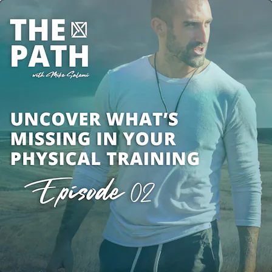

B846 · Uncover What's Missing in Your Physical Training
Hi {first_name},
For years, much of my life revolved around Kettlebell Sport and the archetype of being an athlete. I dedicated an incredible amount of time, energy, and discipline towards my goal of being the best Kettlebell Sport lifter possible. Although my training and vision has evolved over time, that goal attracted me to some amazing experiences and lessons.
Looking back, one of the most memorable experiences involved attending a week-long training camp in St. Petersburg, Russia, run by members of the Russian National Kettlebell Sport Team. During that time, I learned invaluable lessons, not only in my training but also in life. Today I want to share them with you.
In Episode 2 of The Path Podcast, I discuss:
 Click here to listen on Apple.
Click here to listen on Spotify.
If you are enjoying the show, please do share its impact on you by rating, subscribing, and leaving a review, it is much appreciated.
With love and passion, Mike |